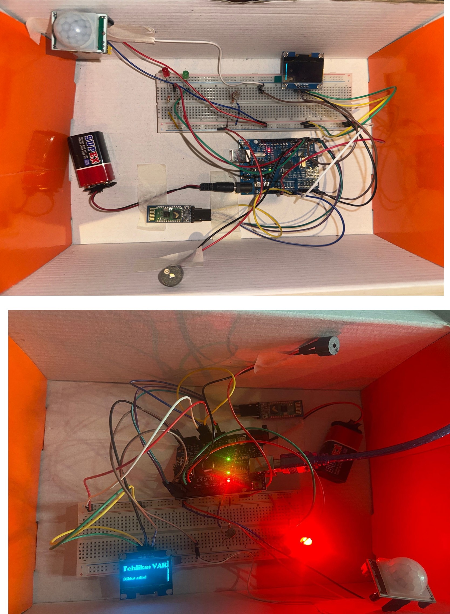
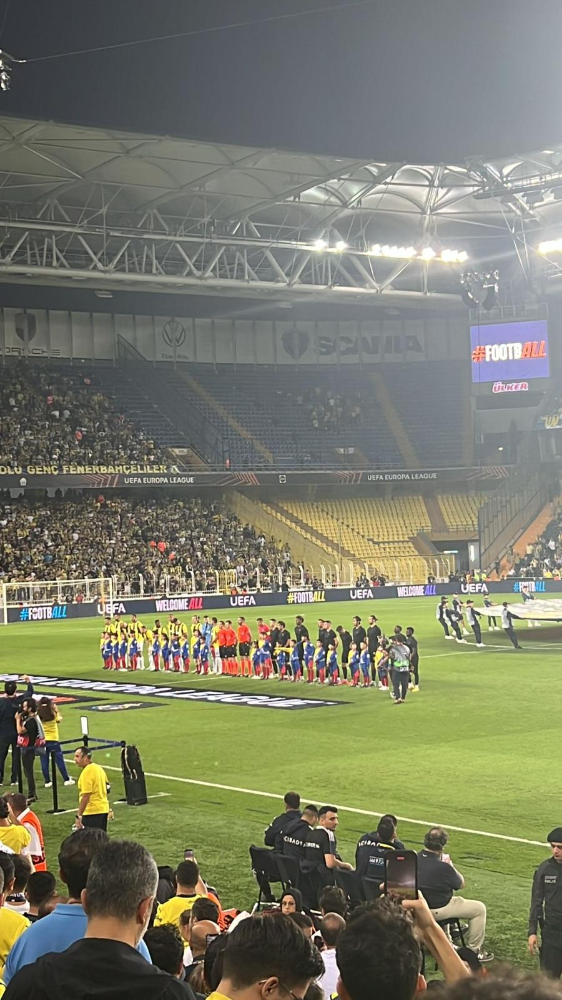
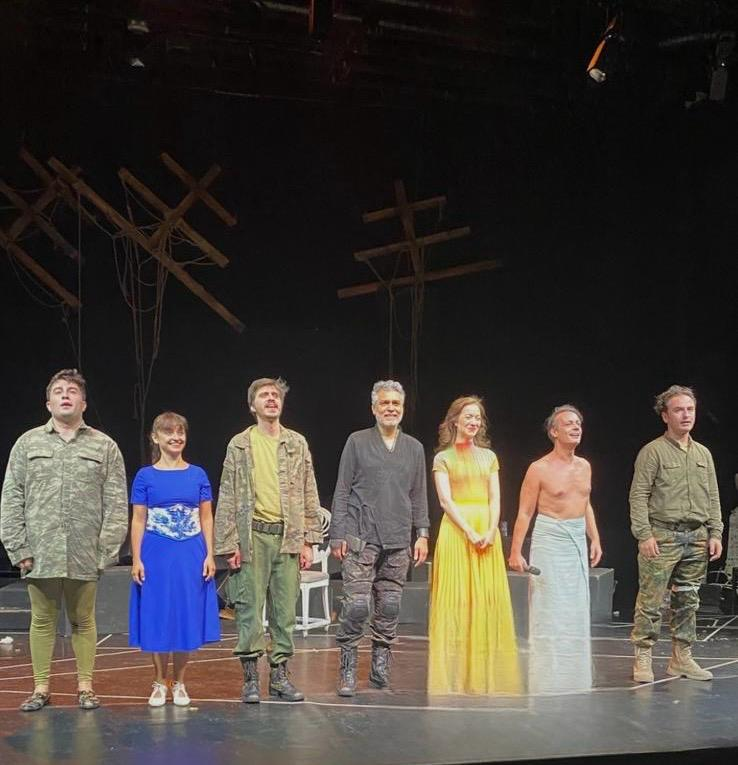

Merhaba, benimle tanışmaya ne dersin? Bu sayfada, ilgi alanlarımı, çalışma yaklaşımımı ve beni ben yapan detayları yakından bulabilirsiniz.
Ben Zeynep Sude Şahin 12 Şubat 2002 doğumluyum.Şu anda Beykent Üniversitesi Bilgisayar mühendisliği 4. sınıf öğrencisiyim. Yoğun ve zaman zaman yorucu bir şehirde yaşamama rağmen, bu tempo bana disiplin kazandırıyor ve odaklanmayı öğretiyor. Günlük hayatımda planlı olmayı seviyorum; küçük hedefler koyup onları tamamladıkça motive oluyorum.
Kendimle baş başa kaldığım zamanlarda hobilerimle ilgilenmeyi,üretmeye ve düşünmeye alan açmayı önemsiyorum. Kahve eşliğinde çalışmak, notlar almak, yaptığım işleri düzenlemek; sevdiğim diziden yeni bir bölüm izlemek veya tuttuğum takımın maçlarını, haberlerini takip etmek bana iyi geliyor. Hayatımı planlıyor olmam, hem çalışmalarım daha motive ve verimli olmasını sağlıyor hem de zevk aldığım, sevdiğim şeylere zaman buluyorum
1. Plan yapma ihtiyacı
Gün içinde ne yapacağımı kabaca da olsa bilmek beni rahatlatıyor. Plansız olduğumda verimim düşüyor; küçük notlar almak ve yapılacakları sıralamak ise kontrol hissi kazanmamı sağlıyor. Her şey mükemmel olmasa bile, bir çerçeveye sahip olmak benim için önemli.
2. Kahveyle gelen odak
Kahve benim için sadece bir içecek değil, çalışmaya geçiş ritüeli gibi. Özellikle yoğun günlerde, kahve eşliğinde sessizce oturup düşünmek ve üretmek odaklanmamı kolaylaştırıyor. Bu küçük alışkanlık, çalışma sürecimi daha keyifli hale getiriyor.
Benim favori kahvem espresso ve amerikano.Çalışma rutinimin değişmeyen parçalarıdır.
3. Sade ama şık olma tercihi
Hem günlük hayatımda hem de yaptığım işlerde sade ama özenli olmayı seviyorum. Gereksiz detaylar yerine netlik benim için daha değerli. Az ama yerinde dokunuşların, kalabalık çözümlerden daha etkili olduğuna inanıyorum
4. Kendimle baş başa kalabilme
Yalnız kaldığım zamanlar beni besliyor. Bu anlarda düşüncelerimi toparlıyor, yaptıklarımı sorguluyor ve kendime karşı daha dürüst olabiliyorum. Sessizlik, benim için kaçış değil; denge kurma yolu.
5. Süreç odaklı düşünme
Bir hedefe ulaşmaktan çok, o hedefe giderken nasıl ilerlediğimle ilgileniyorum. Zamanla, hızlı sonuç almaktan ziyade sürdürülebilir bir tempoda ilerlemenin bana daha iyi geldiğini fark ettim. Öğrenmenin ve gelişmenin bir süreç olduğunu kabul ediyorum.
Sabahları genelde uyandıktan sonra kahve eşliğinde kısa bir süre sosyal medya hesaplarımda vakit geçiriyorum; bu bana güne yumuşak bir geçiş yapma fırsatı veriyor. Eğer yapılması gereken işler varsa, günün başında onları halletmeyi tercih ediyorum. Okula gitmem gereken günlerde, ders saatlerim günün büyük bir kısmını okulda geçirerek ilerliyor; derslerden sonra ise arkadaşlarımla vakit geçirmek günün temposunu dengelememi sağlıyor. Okula gitmediğim günlerde ise işlerimi tamamladıktan sonra öğle saatlerine doğru sevdiğim bir dizi eşliğinde kahvaltımı yapıyorum. Günün devamında kendi çalışmalarımı sürdürüyor, akşam saatlerine kadar odaklanabildiğim ölçüde üretmeye devam ediyorumve günü daha sakin bir tempoyla kapatıyorum.

Sanal Kumbara, kullanıcıların maddi hedeflerini daha somut ve ulaşılabilir hale getirmek için geliştirdiğim bir mobil uygulama. Uygulamanın temel amacı, harcamaları kontrol altına almak yerine,birikim sürecini daha bilinçli ve motive edici bir deneyime dönüştürmek.
Uygulamayı geliştirirken başlangıçta bazı özellikleri gereğinden fazla düşündüğümü fark ettim. Zamanla, karmaşık yapılar yerine daha sade ve kullanıcıyı yormayan bir akışın daha etkili olduğunu gördüm ve projeyi bu doğrultuda yeniden şekillendirdim.

Bu projede, kamusal alanlarda çantalarımızı daha güvenli bir şekilde bırakabilmeyi amaçlayan bir çanta alarm sistemi geliştirdim. Arduino tabanlı bu sistem, çantaya izinsiz müdahale edildiğinde kullanıcıyı uyarmayı hedefleyen pratik bir güvenlik çözümü sunuyor.
Projeyi geliştirirken donanım ve yazılımın birlikte çalışmasının ne kadar önemli olduğunu deneyimleme fırsatı buldum. İlk denemelerde sistemi fazla hassas ayarladığımı fark ettim; daha sonra alarm mekanizmasını daha dengeli ve kullanılabilir olacak şekilde yeniden düzenledim.

Futbolu uzun süredir takip ediyorum ve Fenerbahçe taraftarı olmak benim için yalnızca bir takım tutmaktan ibaret değil. Maçları izlerken oyunun içindeki mücadeleyi, inişleri ve çıkışları yakından hissetmek bana güçlü bir aidiyet duygusu veriyor. Bu bağlılık, sabırlı olmayı ve sürece güvenmeyi öğrenmemi sağlıyor.
Spor programlarını takip etmek, maçların sadece skorla sınırlı olmadığını fark etmemi sağladı. Yorumları ve analizleri dinlerken, karar alma süreçlerini ve stratejik yaklaşımları anlamaya çalışıyorum. Bu alışkanlık, günlük hayatımda olaylara daha geniş bir çerçeveden bakmama ve duygularla birlikte mantığı da dengelememe yardımcı oluyor.

Tiyatroya gitmek benim için günlük hayatın temposundan bilinçli bir şekilde uzaklaşma fırsatı. Sahnedeki hikâyeyi canlı olarak izlemek, karakterlerin duygularını doğrudan hissetmek ve metnin alt katmanlarını düşünmek bana farklı bir perspektif kazandırıyor.
Tiyatro, olaylara tek bir açıdan bakmamayı öğretiyor. Farklı karakterler ve anlatımlar sayesinde empati kurma becerim gelişiyor ve insan ilişkilerine dair bakış açım daha derinleşiyor. Bu da hem akademik hem kişisel hayatımda beni besleyen bir alan haline geliyor.
Bu sayfa, kendimi tek bir çerçeveye sığdırmaktan ziyade nasıl düşündüğümü, nasıl ürettiğimi ve nelere önem verdiğimi anlatmak için hazırlandı. Saf HTML kullanarak oluşturulan bu yapı, benim için yalnızca teknik bir alıştırma değil; aynı zamanda içerik düzeninin ve anlatımın ne kadar belirleyici olduğunu fark ettiğim bir süreç oldu.
Bu çalışma, tasarımdan önce yapının ve anlatımın gelmesi gerektiğini hatırlatmak amacıyla bilinçli olarak sade tutulmuştur.